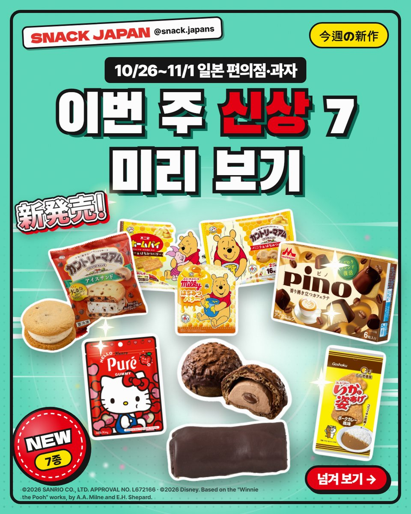
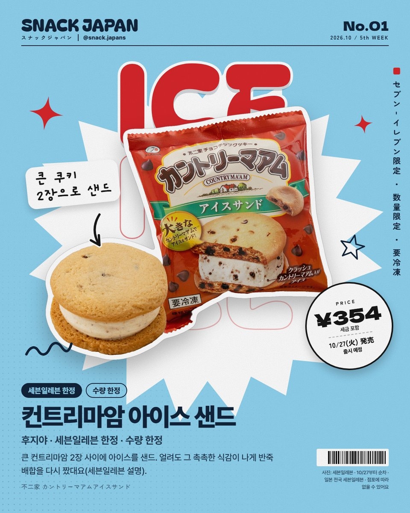
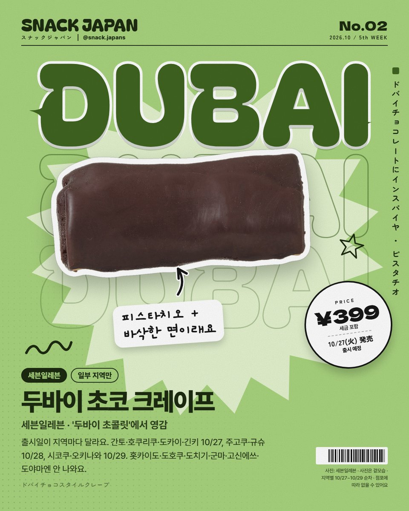
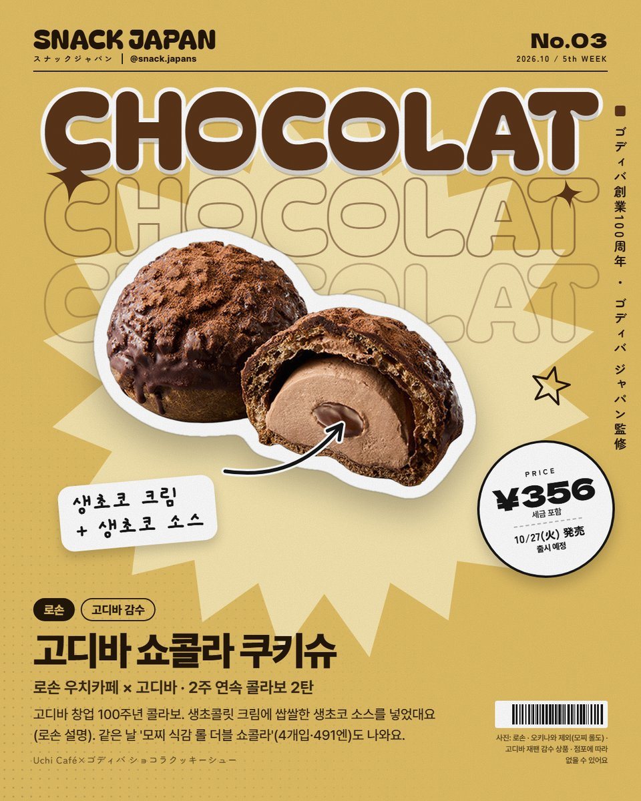
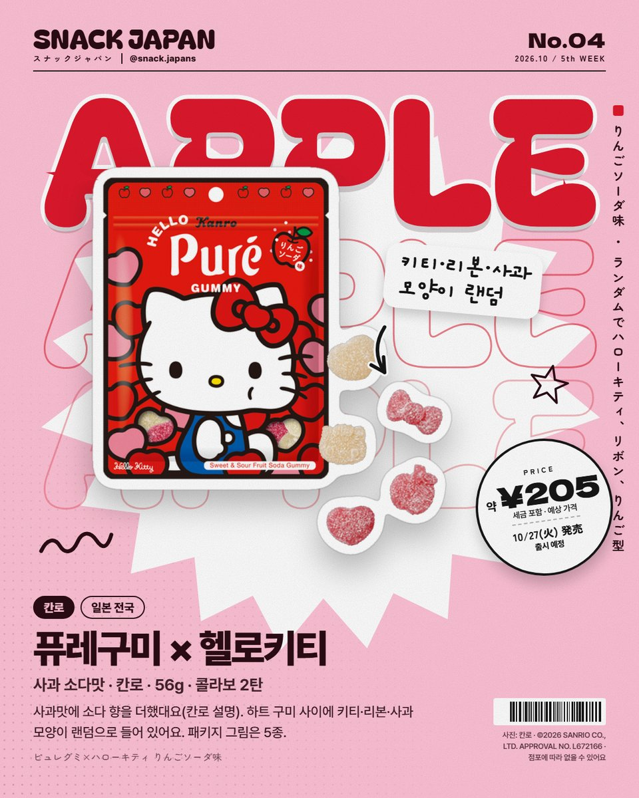
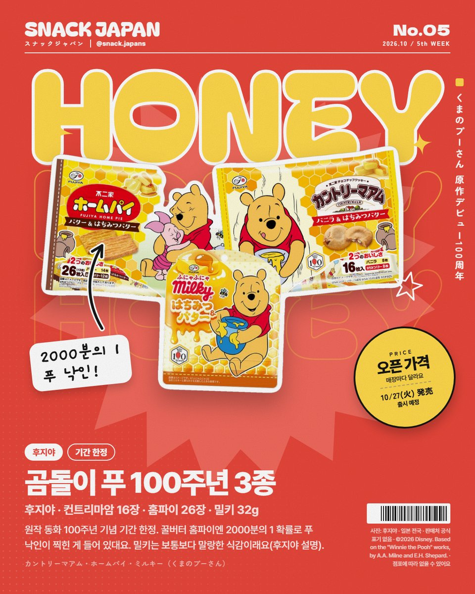
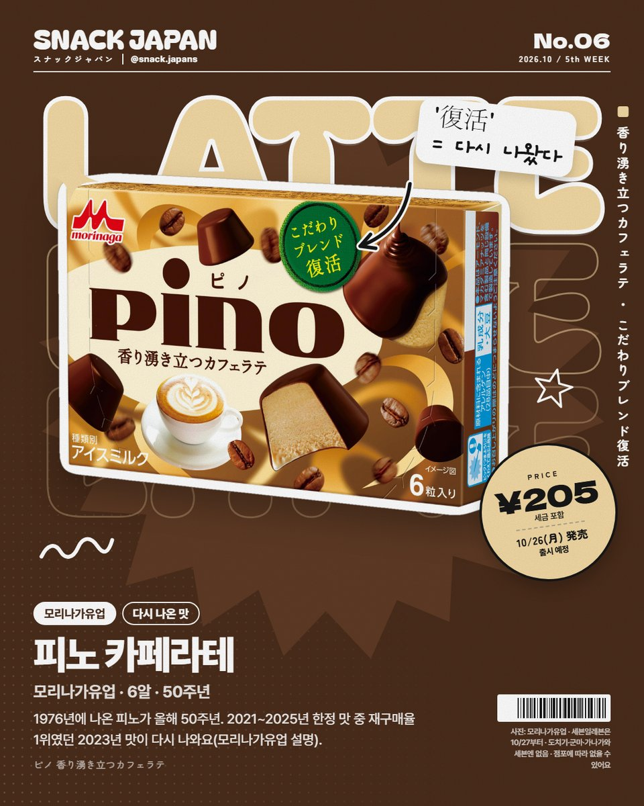
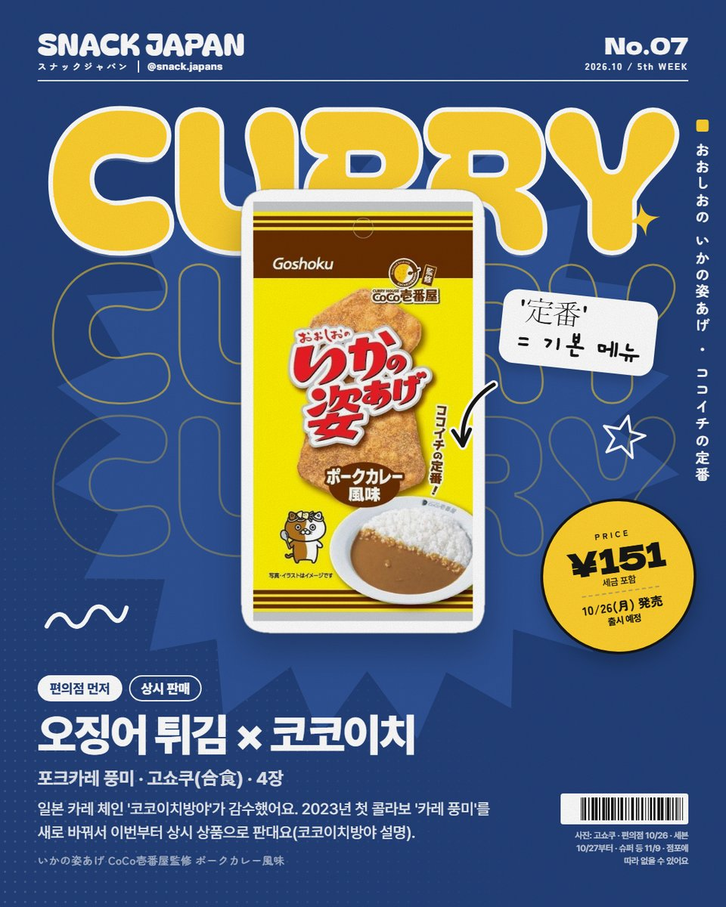
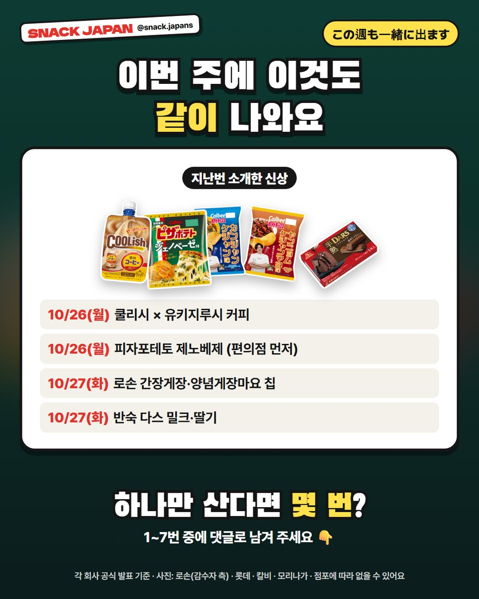

10월 다섯째 주 일본 편의점 신상 7가지, 두바이 초코 크레이프부터 헬로키티 구미까지
10/26~11/1에 나오는 일본 편의점·과자 신상 미리 보기! 컨트리마암 아이스 샌드, 고디바 쿠키슈, 곰돌이 푸 100주년 과자까지.
이번 주 일본 편의점 신상, 미리 봤어요! 🗾
10/26(월)부터 11/1(일)까지
두바이 초코 크레이프에 헬로키티 구미,
곰돌이 푸 100주년 과자까지 나와요 🎉
7가지, 하나씩 정리해 볼게요!


1. 컨트리마암 아이스 샌드 (세븐일레븐 한정)
큰 컨트리마암 2장 사이에 아이스를 샌드했어요.
얼려도 그 촉촉한 식감이 나게 반죽 배합을 다시 짰대요 (세븐일레븐 설명).
- 출시: 10월 27일(화)부터 순차
- 파는 곳: 일본 전국 세븐일레븐 (세븐일레븐 한정·수량 한정)
- 일본 이름: 不二家 カントリーマアムアイスサンド

2. 두바이 초코 크레이프 (세븐일레븐)
'두바이 초콜릿'에서 영감을 받은 크레이프래요.
바삭한 식감의 면 + 진한 피스타치오 풍미 (세븐일레븐 설명).
사진은 겉모습뿐이라 속은 안 보여요!
출시일이 지역마다 달라요.
- 간토·호쿠리쿠·도카이·긴키: 10월 27일(화)부터
- 주고쿠·규슈: 10월 28일(수)부터
- 시코쿠·오키나와: 10월 29일(목)부터
- 안 나오는 곳: 홋카이도·도호쿠·도치기·군마·고신에쓰·도야마
- 일본 이름: ドバイチョコスタイルクレープ

3. 고디바 쇼콜라 쿠키슈 (로손)
로손 우치카페 × 고디바, 2주 연속 콜라보의 2탄이에요.
고디바 창업 100주년 기념!
생초콜릿 크림에 쌉쌀한 생초코 소스를 넣었대요 (로손 설명).
- 출시: 10월 27일(화)
- 파는 곳: 일본 로손 (오키나와 제외)
- 같은 날 '모찌 식감 롤 더블 쇼콜라' 4개입도 나와요 (오키나와 제외)
- 일본 이름: Uchi Café×ゴディバ ショコラクッキーシュー

4. 퓨레구미 × 헬로키티 사과 소다맛 (칸로)
헬로키티 콜라보 2탄이에요.
사과맛에 소다 향을 더했대요 (칸로 설명).
하트 구미 사이에 키티·리본·사과 모양이 랜덤으로 들어 있어요.
- 출시: 10월 27일(화), 일본 전국
- 56g, 패키지 그림 5종
- 일본 이름: ピュレグミ×ハローキティ りんごソーダ味

5. 곰돌이 푸 100주년 3종 (후지야)
원작 동화 100주년 기념, 기간 한정이에요.
- 컨트리마암 (바닐라 & 꿀버터) 16장
- 홈파이 (버터 & 꿀버터) 26장: 꿀버터 쪽에 2000분의 1 확률로 푸 낙인이 찍힌 게 들어 있대요
- 밀키 (꿀 & 버터) 32g: 보통 밀키보다 말랑한 식감이래요 (후지야 설명)
- 출시: 10월 27일(화), 일본 전국
- 참고: 편의점·슈퍼 중 어디서 파는지는 공식 표기가 없어요

6. 피노 카페라테 (모리나가유업)
1976년에 나온 피노가 올해 50주년!
2021~2025년 한정 맛 중 재구매율 1위였던 2023년 맛이 다시 나와요 (모리나가유업 설명).
- 출시: 10월 26일(월), 일본 전국
- 세븐일레븐은 10월 27일부터 (도치기·군마·가나가와 세븐일레븐엔 없어요)
- 6알
- 일본 이름: ピノ 香り湧き立つカフェラテ

7. 오징어 튀김 × 코코이치 포크카레 풍미 (고쇼쿠)
일본 카레 체인 '코코이치방야'가 감수했어요.
2023년 첫 콜라보 '카레 풍미'를 새로 바꿔서
이번부터 상시 상품으로 판대요 (코코이치방야 설명).
- 출시: 편의점 10월 26일(월) 먼저, 세븐일레븐은 10월 27일부터
- 그 밖의 매장(슈퍼 등)은 11월 9일부터
- 4장
- 일본 이름: いかの姿あげ CoCo壱番屋監修 ポークカレー風味

8. 이번 주에 이것도 같이 나와요
지난번 소개한 신상도 이번 주에 나와요.
- 10/26(월): 쿨리시 × 유키지루시 커피
- 10/26(월): 피자포테토 제노베제 (편의점 먼저)
- 10/27(화): 로손 간장게장·양념게장마요 칩
- 10/27(화): 반숙 다스 밀크·딸기
총평
- 가격: 사진 카드에 정리해 뒀어요
- 기준: 10월 20일 각 회사 공식 발표
- 참고: 출시일·판매 점포는 지역·매장마다 달라요
- 추천: 이번 주 일본 여행 가는 분, 편의점 신상 코너부터 도는 분
이번 주 하나만 산다면 몇 번이에요? 🛒
사진 표기: ©2026 SANRIO CO., LTD. APPROVAL NO. L672166 · ©2026 Disney. Based on the "Winnie the Pooh" works, by A.A. Milne and E.H. Shepard.